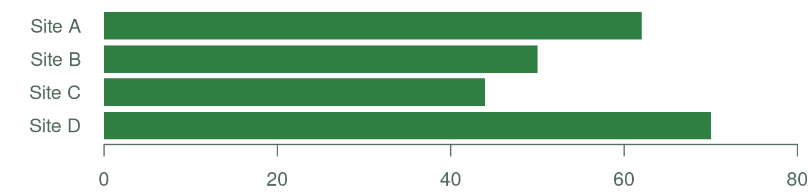
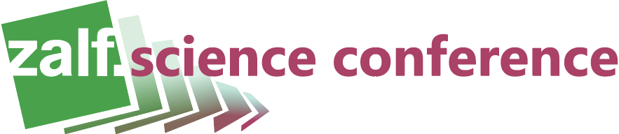
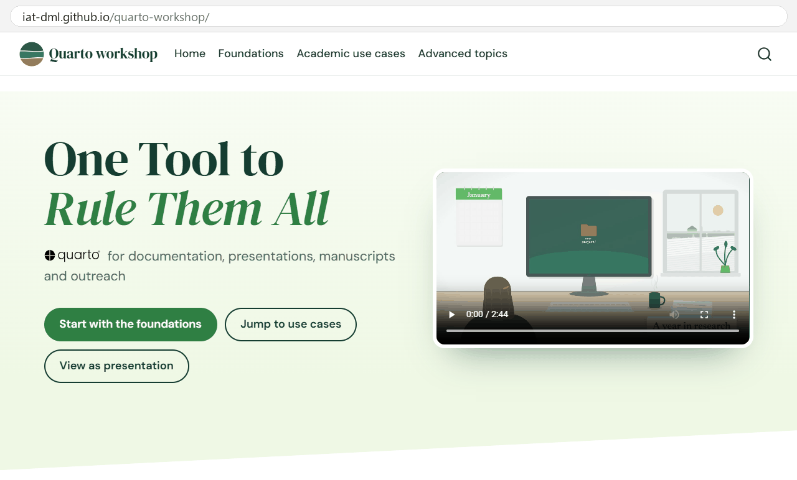
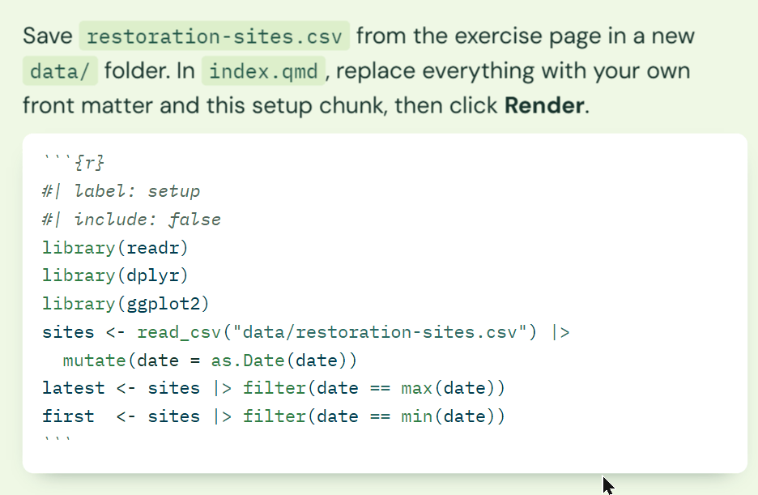
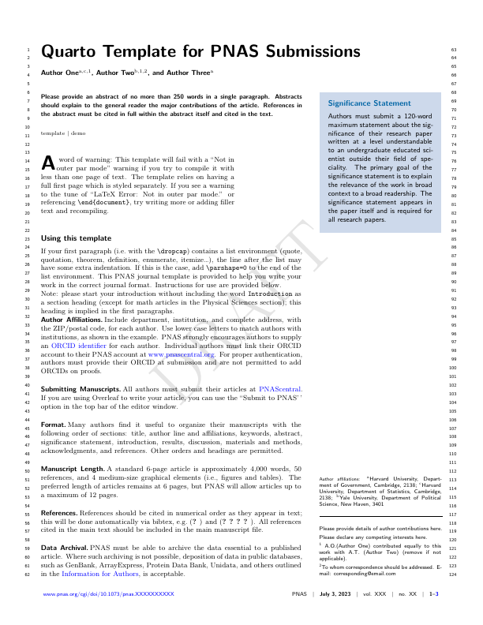
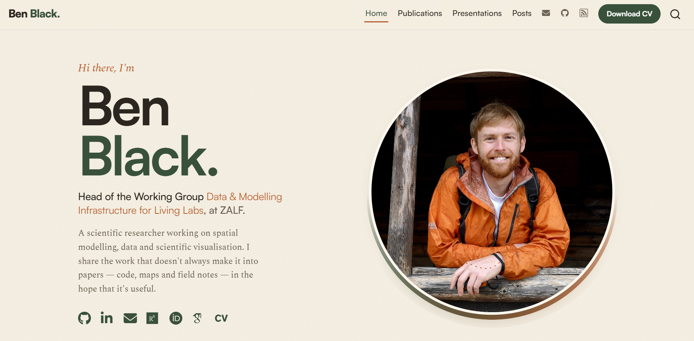

One Tool to Rule Them All
Quarto for documentation, presentations, manuscripts and outreach
Ben Black
Data and Modelling Infrastructure for Living Labs (DML), ZALF
ZALF Science Conference 2026, 19 November 2026
Workshop Structure
13:00 The basics Welcome, what Quarto is, Markdown and YAML 15 min
13:15 Demo: a manuscript, built together You follow along on your laptop, one step at a time 30 min
13:45 Your turn Pick a use case and work through its exercise on the website 40 min
14:25 Wrap-up and questions Where to go next, and a follow-up talk on 10 December 2026 5 min
If you already know Quarto, skip the demo and start on an exercise straight away.
Open the workshop website on your laptop now
iat-dml.github.io/quarto-workshop
Everything for today is on it: these slides, and a guide and an exercise for each use case. It stays online after today.

View as presentation on the home page opens these slides, so you can follow them on your own screen.
Copy any code block from the slides if you fall behind

- Move the mouse over a code block and a copy button appears in its top right corner.
- Click it, then paste the code into RStudio with Ctrl+V.
- Every code block in the exercises on the website has the same button.
The basics
Markdown for the text, YAML for the settings and, where you need it, code for the results.
Quarto turns a plain-text file into documents, slides and websites
- Quarto is an open-source publishing system from Posit, the company behind RStudio.
- If you know R Markdown, most of it will look familiar: Quarto is its successor.
- It works with R, Python or Julia, or with no code at all.
- You keep your editor: RStudio, Positron and VS Code all support
.qmdfiles.
A .qmd file combines YAML settings, Markdown text and optional code
report.qmd
- The YAML header between the
---lines holds the settings, such as the title and the output format. - Markdown marks up the text:
##starts a heading and**makes text bold. - A code chunk runs when you render, and its output, here a boxplot, appears in the document.
You have probably written Markdown already, even without programming
John Gruber designed Markdown in 2004 so that formatted text still reads naturally as plain text. Many tools researchers use every day now format text with it.
| Where you have seen it | What Markdown does there |
|---|---|
| AI assistants such as ChatGPT and Copilot | The headings, bold text and lists in each answer are Markdown |
| Chat in Teams and Slack | Asterisks around a word make it bold |
| README files on GitHub and GitLab | The start page of a repository is a README.md file |
| Jupyter notebooks | The text cells between the code cells are Markdown |
| Note apps such as Obsidian and Joplin | Every note is written in Markdown |
Markdown marks what the text is, and Quarto decides how it looks
methods.qmd
methods.html
Field methods
We surveyed every plot twice a year and recorded all vascular plants.
- Spring survey in May
- Autumn survey in September
The full protocol is on the website.
Numbered lists, tables and images are plain text too
methods.qmd
Quotes, footnotes and equations are just as short: see Markdown for beginners on the website.
methods.html
- Clip the vegetation in each plot.
- Dry the samples at 60 °C for 48 hours.
| Site | Cover (%) | Species |
|---|---|---|
| Site A | 62 | 17 |
| Site B | 50 | 15 |
| Site C | 44 | 14 |
| Site D | 70 | 21 |
One line in the YAML header decides the output format
Demo: writing a manuscript together
We build one short article step by step, you on your laptop and I on screen, from the data to a PDF, a web page and a Word file.
How do you prepare a manuscript today, and what goes wrong?
Think about the software rather than the science:
- Where do you analyse the data and make the figures?
- Where do you and your co-authors write the text?
- How does it end up in the format the journal asks for?
The back and forth between analysis and writing
We use different tools for analysis and for writing, so as the manuscript develops we keep going back and forth between them. That takes time and leaves room for mistakes.
With Quarto the analysis and the text share one file, so one render updates both.
Numbers in the text come from the same code as the figures
index.qmd
index.html
We monitored restoration sites. Mean vegetation cover rose from % to %.
tokens = getComputedStyle(document.querySelector(".reveal"))
green = tokens.getPropertyValue("--ds-green").trim()
slide_style = ({
width: 720,
height: 300,
marginLeft: 56,
marginBottom: 56,
marginRight: 40,
style: { fontSize: "16px", background: "transparent",
color: tokens.getPropertyValue("--ds-muted").trim() },
x: { type: "utc", label: "Monitoring date", labelAnchor: "center", labelOffset: 48,
ticks: "6 months", tickFormat: "%b %Y" },
y: { label: "Mean vegetation cover (%)", grid: true }
})
// The chart cell on the left draws the figure; its own output is hidden, so a
// copy is shown here. It updates whenever the R code re-runs.
chart.cloneNode(true)Final submission headaches

Manuscript submission often creates challenges, as journals require different formats. Over time I have increasingly opted to submit in LaTeX so that my tables keep their formatting, but moving a Word draft into LaTeX means redoing the formatting and references by hand.
Quarto renders one source to Word, PDF and LaTeX, and journal templates apply each publisher’s style.
Build the manuscript on your laptop as I build it on screen
- I go through six steps on screen, and you do each one on your own laptop.
- Type the code yourself where you can. You will remember it better than code you pasted.
- If you fall behind, copy the code from the slide on your own screen and carry on with the next step.
- Each step slide also names the matching step of the manuscript exercise on the website.
- Create a manuscript project
- Add authors and a setup chunk
- Put numbers from the data into the text
- Add a figure and cross-reference it
- Refer to a section and cite a DOI
- Render to PDF, HTML and Word
Check that your editor can find Quarto before we start
Positron includes Quarto. Press Ctrl+Shift+P and run Quarto: Verify Installation. A dialog shows the version and where Quarto is installed.
Install the Quarto extension, then press Ctrl+Shift+P and run Quarto: Verify Installation. On a ZALF laptop, VS Code finds RStudio’s copy of Quarto only once you set quarto.path, as described on the website.
You need Quarto 1.8 or newer. Not found, or too old? Installing Quarto on the website covers each editor.
Set up R: one setting on ZALF laptops, then three packages
On a ZALF laptop, run this once in PowerShell, then restart RStudio. Without it, documents with R code fail to render.
Install the packages the demo uses, in the RStudio console:
Both steps are under “Setting up on a ZALF laptop” on the website.
Step 1 of 6: create a manuscript project and choose its formats
Open the manuscript exercise on the website. In RStudio choose File → New Project → New Directory → Quarto Manuscript, in a folder outside OneDrive. Then replace _quarto.yml with:
Behind? These are Steps 1 and 3 of the exercise.
- Create a manuscript project
- Add authors and a setup chunk
- Put numbers from the data into the text
- Add a figure and cross-reference it
- Refer to a section and cite a DOI
- Render to PDF, HTML and Word
Step 2 of 6: add authors and a setup chunk that loads the data
Save restoration-sites.csv from the exercise page in a new data/ folder. In index.qmd, replace everything with your own front matter and this setup chunk, then click Render.
Behind? The front matter is in Step 2 of the exercise and the setup chunk in Step 4.
- Create a manuscript project
- Add authors and a setup chunk
- Put numbers from the data into the text
- Add a figure and cross-reference it
- Refer to a section and cite a DOI
- Render to PDF, HTML and Word
Step 3 of 6: put numbers from the data into the text
Below the setup chunk, add the Methods heading and the paragraph from the exercise, then render. It starts like this:
Behind? The heading and the full paragraph are in Step 5 of the exercise.
- Create a manuscript project
- Add authors and a setup chunk
- Put numbers from the data into the text
- Add a figure and cross-reference it
- Refer to a section and cite a DOI
- Render to PDF, HTML and Word
Step 4 of 6: a labelled figure gets a number and a link
Below the paragraph, add the figure chunk from the exercise. Its label is fig-cover, so the text can refer to it:
Behind? The chunk and this sentence are in Step 6 of the exercise.
- Create a manuscript project
- Add authors and a setup chunk
- Put numbers from the data into the text
- Add a figure and cross-reference it
- Refer to a section and cite a DOI
- Render to PDF, HTML and Word
Step 5 of 6: the Insert menu adds cross-references and citations
In the Visual editor, start a new paragraph at the end and write this sentence. Insert @sec-methods with Insert → Cross Reference, and the citation with Insert → Citation, From DOI, 10.1111/rec.13035.
No internet, or no dialog? Paste the reference from the tip in Step 7 of the exercise into references.bib and type the sentence in Source mode.
- Create a manuscript project
- Add authors and a setup chunk
- Put numbers from the data into the text
- Add a figure and cross-reference it
- Refer to a section and cite a DOI
- Render to PDF, HTML and Word
Step 6 of 6: one render gives PDF, web page and Word
Add docx: default to the formats in _quarto.yml. Then click Render Project in the Build tab, or run quarto render in the Terminal tab.
Behind? Rendering is Step 8 of the exercise.
- Create a manuscript project
- Add authors and a setup chunk
- Put numbers from the data into the text
- Add a figure and cross-reference it
- Refer to a section and cite a DOI
- Render to PDF, HTML and Word
Your turn
pick another use case and work through it
Explore independently
Each use case on the website has a guide with tips and an exercise. Work on one until 14:25, on either of two paths:
- Path A: bring your own content, such as a draft paper, a talk you need to give or your own data.
- Path B: use the sample data and text we provide.
I’ll come round the room to answer questions and help when something does not render.
Wrap-up and questions
All the material stays online after today, and the exercises work on your own laptop too.
Upcoming talk for postdocs
An efficient approach to keeping your research profile up to date
10 December 2026, 13:00 to 14:00
Haus 13 and on Teams
- I log each paper, talk and project once, in a YAML file.
- My CV and website are Quarto projects that read it.
- GitHub Actions rebuild both when I add an entry.
Ask Camille Imbert for more details.


iat-dml.github.io/quarto-workshop